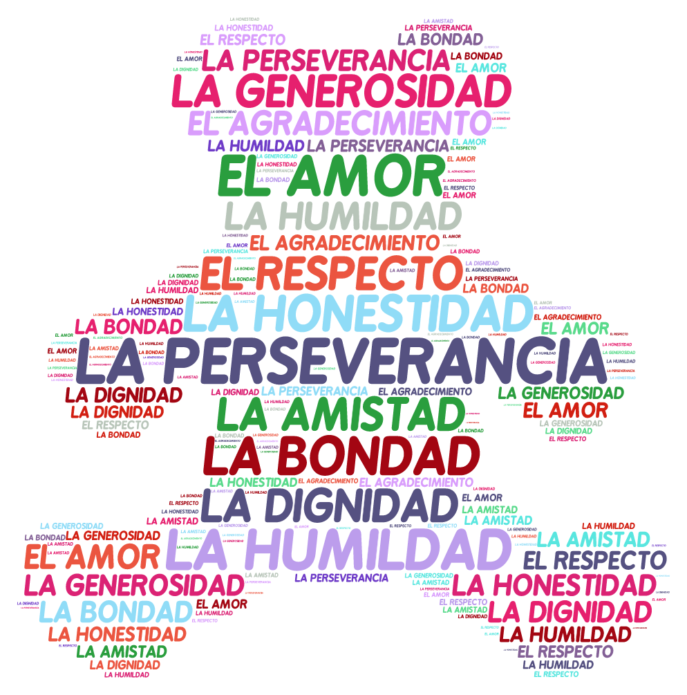

El rey o la Reina dicen...

¿Cómo se juega?
- El educador (a) o catequista invitará a un (a) participante a ser el Rey o la Reina.
- El Rey o la Reina escogerán un don y podrán seleccionar a un equipo o a todo el grupo y l@s participantes seleccionados deberán expresar al grupo las conductas, gestos, palabras, sonidos que manifiestan ese valor-don, que permiten reconocerlo. Por ejemplo, si piden que todo el grupo represente la “armonía” podrían abrazarse todos y todas. Otro ejemplo, si tienen que representar la “reconciliación”, podrían darse la mano y
- Si el Rey o la Reina dan la instrucción sin decir antes: El Rey o la Reina dice… Tod@s l@s participantes tendrán que quedarse quiet@s y el grupo escogerá que valor-don deberá representar el Rey o la Reina. La lista de valores-dones: Armonía, cooperación, solidaridad, perdón, misericordia, amor, reconciliación, verdad, justicia, bondad, amistad, fraternidad, alegría. Más la lista que salga de los y las participantes.
Recuperar experiencia
¿Cuáles fueron los valores-dones en los que se identificó la conducta con más facilidad? Y ¿Cuáles fueron los más difíciles? ¿De qué otra manera se puede hacer para que se reconozca o comprenda ese valor-don que fue difícil escenificar o ejemplificar? Expresar ¿Qué sentimientos experimentaron en este primer momento?
